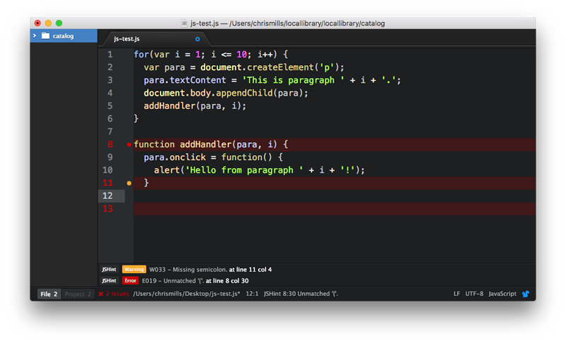

Now we'll look at common cross-browser JavaScript problems and how to fix them. This includes information on using browser dev tools to track down and fix problems, using Polyfills and libraries to work around problems, getting modern JavaScript features working in older browsers, and more.
| Prerequisites: | Familiarity with the core HTML, CSS, and JavaScript languages; an idea of the high-level principles of cross browser testing. |
|---|---|
| Objective: | To be able to diagnose common JavaScript cross-browser problems, and use appropriate tools and techniques to fix them. |
Historically, JavaScript was plagued with cross-browser compatibility problems — back in the 1990s, the main browser choices back then (Internet Explorer and Netscape) had scripting implemented in different language flavors (Netscape had JavaScript, IE had JScript and also offered VBScript as an option), and while at least JavaScript and JScript were compatible to some degree (both based on the {{glossary("ECMAScript")}} specification), things were often implemented in conflicting, incompatible ways, causing developers many nightmares.
Such incompatibility problems persisted well into the early 2000s, as old browsers were still being used and still needed supporting. This is one of the main reasons why libraries like jQuery came into existence — to abstract away differences in browser implementations (e.g. see the code snippet in How to make an HTTP request) so developers only have to write one simple bit of code (see jQuery.ajax()). jQuery (or whatever library you are using) will then handle the differences in the background, so you don't have to.
Things have improved significantly since then; modern browsers do a good job of supporting "classic JavaScript features", and the requirement to use such code has diminished as the requirement to support older browsers has lessened (although bear in mind that they have not gone away altogether).
These days, most cross-browser JavaScript problems are seen:
We'll explore all these problems and more below.
As we said in the previous article on HTML/CSS, you should make sure your code is working generally, before going on to concentrate on the cross-browser issues. If you are not already familiar with the basics of Troubleshooting JavaScript, you should study that article before moving on. There are a number of common JavaScript problems that you will want to be mindful of, such as:
this scope to a separate variable, then using that variable in nested functions so you can be sure you are applying functionality to the correct this scope.var, each time creating a paragraph and adding an onclick event handler to it. When clicked, we want each one to display an alert message containing its number (the value of i at the time it was created). Instead they all report i as 11 — because the for loop does all its iterating before nested functions are invoked.
The easiest solution is to declare the iteration variable with let instead of var—the value of i associated with the function is then unique to each iteration. Unfortunately this does not work correctly with IE11, which is why we haven't used this approach in the "good" for loop.
para and i each time (or something similar). See good-for-loop.html (see the source code also) for a version that works.
Note: Buggy JavaScript Code: The 10 Most Common Mistakes JavaScript Developers Make has some nice discussions of these common mistakes and more.
As with HTML and CSS, you can ensure better quality, less error-prone JavaScript code using a linter, which points out errors and can also flag up warnings about bad practices, etc., and be customized to be stricter or more relaxed in their error/warning reporting. The JavaScript/ECMAScript linters we'd recommend are JSHint and ESLint; these can be used in a variety of ways, some of which we'll detail below.
The JSHint homepage provides an online linter, which allows you to enter your JavaScript code on the left and provides an output on the right, including metrics, warnings, and errors.
It is not very convenient to have to copy and paste your code over to a web page to check its validity several times. What you really want is a linter that will fit into your standard workflow with the minimum of hassle. Many code editors have linter plugins, for example Github's Atom code editor has a JSHint plugin available.
To install it:
Other popular editors have similar linting packages available. For example, see the "Plugins for text editors and IDEs" section of the JSHint install page.
There are other ways to use such linters; you can read about them on the JSHint and ESLint install pages.
It is worth mentioning command line uses — you can install these tools as command line utilities (available via the CLI — command line interface) using npm (Node Package Manager — you'll have to install NodeJS first). For example, the following command installs JSHint:
npm install -g jshint
You can then point these tools at JavaScript files you want to lint, for example:
 You can also use these tools with a task runner/build tool such as Gulp or Webpack to automatically lint your JavaScript during development. (see Using a task runner to automate testing tools in a later article.) See ESLint integrations for ESLint options; JSHint is supported out of the box by Grunt, and also has other integrations available, e.g. JSHint loader for Webpack.
You can also use these tools with a task runner/build tool such as Gulp or Webpack to automatically lint your JavaScript during development. (see Using a task runner to automate testing tools in a later article.) See ESLint integrations for ESLint options; JSHint is supported out of the box by Grunt, and also has other integrations available, e.g. JSHint loader for Webpack.
Note: ESLint takes a bit more setup and configuration than JSHint, but it is more powerful too.
Browser developer tools have many useful features for helping to debug JavaScript. For a start, the JavaScript console will report errors in your code.
Make a local copy of our broken-ajax.html example (see the source code also).
If you look at the console, you'll see the error message "", and the referenced line number is 49. If we look at the source code, the relevant code section is this:
function showHeroes(jsonObj) {
let heroes = jsonObj['members'];
for(i = 0; i < heroes.length; i++) {
...
So the code falls over as soon as we try to access a property of jsonObj (which as you might expect, is supposed to be a JSON object). This is supposed to be fetched from an external .json file using the following XMLHttpRequest call:
let requestURL = 'https://mdn.github.io/learning-area/javascript/oojs/json/superheroes.json';
let request = new XMLHttpRequest();
request.open('GET', requestURL);
request.send();
let superHeroes = request.response;
populateHeader(superHeroes);
showHeroes(superHeroes);
But this fails.
You may already know what is wrong with this code, but let's explore it some more to show how you could investigate this. For a start, there is a Console API that allows JavaScript code to interact with the browser's JavaScript console. It has a number of features available, but the main one you'll use often is console.log(), which prints a custom message to the console.
Try inserting the following line just below line 31 (bolded above):
console.log('Response value: ' + superHeroes);
Refresh the page in the browser, and you will get an output in the console of "Response value:", plus the same error message we saw before
The console.log() output shows that the superHeroes object doesn't appear to contain anything. A very common problem with async requests like this is when you try to do something with the response object before it has actually been returned from the network. Let's fix this problem by running the code once the load event has been fired — remove the console.log() line, and update this code block:
let superHeroes = request.response; populateHeader(superHeroes); showHeroes(superHeroes);
to the following:
request.onload = function() {
let superHeroes = request.response;
populateHeader(superHeroes);
showHeroes(superHeroes);
}
To summarize, anytime something is not working and a value does not appear to be what it is meant to be at some point in your code, you can use console.log() to print it out and see what is happening.
Unfortunately, we still have the same error — the problem has not gone away. Let's investigate this now, using a more sophisticated feature of browser developer tools: the JavaScript debugger as it is called in Firefox.
Note: Similar tools are available in other browsers; the Sources tab in Chrome, Debugger in Safari (see Safari Web Development Tools), etc.
In Firefox, the Debugger tab looks as follows:

The main feature of such tools is the ability to add breakpoints to code — these are points where the execution of the code stops, and at that point you can examine the environment in its current state and see what is going on.
Let's get to work. The error is now being thrown at line 51. Click on line number 51 in the center panel to add a breakpoint to it (you'll see a blue arrow appear over the top of it). Now refresh the page (Cmd/Ctrl + R) — the browser will pause execution of the code at line 51. At this point, the right-hand side will update to show some very useful information.

showHeroes() the function we are currently in, and second we have onload, which stores the event handler function containing the call to showHeroes().showHeroes, block, and Window (the global scope). Each scope can be expanded to show the values of variables inside the scope when execution of the code was stopped.We can find out some very useful information in here.
showHeroes scope — you can see from this that the heroes variable is undefined, indicating that accessing the members property of jsonObj (first line of the function) didn't work.jsonObj variable is storing a text string, not a JSON object.onload in the Call Stack section. The view will update to show the request.onload function in the center panel, and its scopes in the Scopes section.onload scope, you'll see that the superHeroes variable is a text string too, not an object. This settles it — our XMLHttpRequest call is returning the JSON as text, not JSON.We'd like you to try fixing this problem yourself. To give you a clue, you can either tell the XMLHttpRequest object explicitly to return JSON format, or convert the returned text to JSON after the response arrives. If you get stuck, consult our fixed-ajax.html example.
Note: The debugger tab has many other useful features that we've not discussed here, for example conditional breakpoints and watch expressions. For a lot more information, see the Debugger page.
As your apps get more complex and you start to use more JavaScript, you may start to run into performance problems, especially when viewing apps on slower devices. Performance is a big topic, and we don't have time to cover it in detail here. Some quick tips are as follows:
Note: Addy Osmani's Writing Fast, Memory-Efficient JavaScript contains a lot of detail and some excellent tips for boosting JavaScript performance.
In this section, we'll look at some of the more common cross-browser JavaScript problems. We'll break this down into:
In the previous article we described some of the ways in which HTML and CSS errors and unrecognized features can be handled due to the nature of the languages. JavaScript is not as permissive as HTML and CSS however — if the JavaScript engine encounters mistakes or unrecognized syntax, more often than not it will throw errors.
There are a number of modern JavaScript language features defined in recent versions of the specs (ECMAScript 6 / ECMAScript Next) that won't work in older browsers. Some of these are syntactic sugar (basically an easier, nicer way of writing what you can already do using existing features), and some offer interesting new possibilities.
For example:
There are also many new APIs appearing in recent browsers, which don't work in older browsers, for example:
There are a few strategies for handling incompatibilities between browsers relating to feature support; let's explore the most common ones.
Note: These strategies do not exist in separate silos — you can, of course combine them as needed. For example, you could use feature detection to determine whether a feature is supported; if it isn't, you could then run code to load a polyfill or a library to handle the lack of support.
The idea behind feature detection is that you can run a test to determine whether a JavaScript feature is supported in the current browser, and then conditionally run code to provide an acceptable experience both in browsers that do and don't support the feature. As a quick example, the Geolocation API (which exposes available location data for the device the web browser is running on) has a main entry point for its use — a geolocation property available on the global Navigator object. Therefore, you can detect whether the browser supports geolocation or not by using something like the following:
if("geolocation" in navigator) { navigator.geolocation.getCurrentPosition(function(position) { // show the location on a map, perhaps using the Google Maps API }); } else { // Give the user a choice of static maps instead perhaps }
You could also write such a test for a CSS feature, for example by testing for the existence of element.style.property (e.g. paragraph.style.transform !== undefined). But for both CSS and JavaScript, it is probably better to use an established feature detection library rather than writing your own all the time. Modernizr is the industry standard for feature detection tests.
As a last point, don't confuse feature detection with browser sniffing (detecting what specific browser is accessing the site) — this is a terrible practice that should be discouraged at all costs. See {{anch("Using bad browser sniffing code")}}, later on, for more details.
Note: Some features are known to be undetectable — see Modernizr's list of Undetectables.
Note: Feature detection will be covered in a lot more detail in its own dedicated article, later in the module.
JavaScript libraries are essentially third party units of code that you can attach to your page, providing you with a wealth of ready-made functionality that can be used straight away, saving you a lot of time in the process. A lot of JavaScript libraries probably came into existence because their developer was writing a set of common utility functions to save them time when writing future projects, and decided to release them into the wild because other people might find them useful too.
JavaScript libraries tend to come in a few main varieties (some libraries will serve more than one of these purposes):
When choosing a library to use, make sure that it works across the set of browsers you want to support, and test your implementation thoroughly. Also make sure that the library is popular and well-supported, and isn't likely to just become obsolete next week. Talk to other developers to find out what they recommend, see how much activity and how many contributors the library has on Github (or wherever else it is stored), etc.
Note: JavaScripting.com gives you a good idea of just how many JavaScript libraries there are available, and can be useful for finding libraries for specific purposes.
Library usage at a basic level tends to consist of downloading the library's files (JavaScript, possibly some CSS or other dependencies too) and attaching them to your page (e.g. via a {{htmlelement("script")}} element), although there are normally many other usage options for such libraries, like installing them as Bower components, or including them as dependencies via the Webpack module bundler. You will have to read the libraries' individual install pages for more information.
Note: You will also come across JavaScript frameworks in your travels around the Web, like Ember and Angular. Whereas libraries are often usable for solving individual problems and dropping into existing sites, frameworks tend to be more along the lines of complete solutions for developing complex web applications.
Polyfills also consist of 3rd party JavaScript files that you can drop into your project, but they differ from libraries — whereas libraries tend to enhance existing functionality and make things easier, polyfills provide functionality that doesn't exist at all. Polyfills use JavaScript or other technologies entirely to build in support for a feature that a browser doesn't support natively. For example, you might use a polyfill like es6-promise to make promises work in browsers where they are not supported natively.
Modernizr's list of HTML5 Cross Browser Polyfills is a useful place to find polyfills for different purposes. Again, you should research them before you use them — make sure they work and are maintained.
Let's work through an exercise — in this example we will use a Fetch polyfill to provide support for the Fetch API in older browsers; however we also need to use the es6-promise polyfill, as Fetch makes heavy use of promises, and browsers that don't support them will still be in trouble.
<script src="https://cdn.jsdelivr.net/npm/es6-promise@4/dist/es6-promise.min.js"></script> <script src="https://cdn.jsdelivr.net/npm/es6-promise@4/dist/es6-promise.auto.min.js"></script> <script src="fetch.js"></script>
var myImage = document.querySelector('.my-image');
fetch('flowers.jpg').then(function(response) {
response.blob().then(function(myBlob) {
var objectURL = URL.createObjectURL(myBlob);
myImage.src = objectURL;
});
});
Note: You can find our finished version at fetch-polyfill-finished.html (see also the source code).
Note: Again, there are many different ways to make use of the different polyfills you will encounter — consult each polyfill's individual documentation.
One thing you might be thinking is "why should we always load the polyfill code, even if we don't need it?" This is a good point — as your sites get more complex and you start to use more libraries, polyfills, etc., you can start to load a lot of extra code, which can start to affect performance, especially on less-powerful devices. It makes sense to only load files as needed.
Doing this requires some extra setup in your JavaScript. You need some kind of a feature detection test that detects whether the browser supports the feature we are trying to use:
if (browserSupportsAllFeatures()) {
main();
} else {
loadScript('polyfills.js', main);
}
function main(err) {
// actual app code goes in here
}
So first we run a conditional that checks whether the function browserSupportsAllFeatures() returns true. If it does, we run the main() function, which will contain all our app's code. browserSupportsAllFeatures() looks like this:
function browserSupportsAllFeatures() {
return window.Promise && window.fetch;
}
Here we are testing whether the Promise object and fetch() function exist in the browser. If both do, the function returns true. If the function returns false, then we run the code inside the second part of the conditional — this runs a function called loadScript(), which loads the polyfills into the page, then runs main() after the loading has finished. loadScript() looks like this:
function loadScript(src, done) {
const js = document.createElement('script');
js.src = src;
js.onload = function() {
done();
};
js.onerror = function() {
done(new Error('Failed to load script ' + src));
};
document.head.appendChild(js);
}
This function creates a new <script> element, then sets its src attribute to the path we specified as the first argument ('polyfills.js' when we called it in the code above). When it has loaded, we run the function we specified as the second argument (main()). If an error occurs in the loading of the script, we still call the function, but with a custom error that we can retrieve to help debug a problem if it occurs.
Note that polyfills.js is basically the two polyfills we are using put together into one file. We did this manually, but there are cleverer solutions that will automatically generate bundles for you — see Browserify (see Getting started with Browserify for a basic tutorial). It is a good idea to bundle JS files into one like this — reducing the number of HTTP requests you need to make improves the performance of your site.
You can see this code in action in fetch-polyfill-only-when-needed.html (see the source code also). We'd like to make it clear that we can't take credit for this code — it was originally written by Philip Walton. Check out his article Loading Polyfills Only When Needed for the original code, plus a lot of useful explanation around the wider subject).
Note: There are some 3rd party options to consider, for example Polyfill.io — this is a meta-polyfill library that will look at each browser's capabilities and apply polyfills as needed, depending on what APIs and JS features you are using in your code.
Another option that is becoming popular for people that want to use modern JavaScript features now is converting code that makes use of ECMAScript 6/ECMAScript 2015 features to a version that will work in older browsers.
Note: This is called "transpiling" — you are not compiling code into a lower level to be run on a computer (like you would say with C code); instead, you are changing it into a syntax that exists at a similar level of abstraction so it can be used in the same way, but in slightly different circumstances (in this case, transforming one flavor of JavaScript into another).
So for example, we talked about arrow functions (see arrow-function.html live, and see the source code) earlier in the article, which only work in the newest browsers:
() => { ... }
We could transpile this across to a traditional old-fashioned anonymous function, so it would work in older browsers:
function() { ... }
The recommended tool for JavaScript transpiling is currently Babel. This offers transpilation capabilities for language features that are appropriate for transpilation. For features that can't just be easily transpiled into an older equivalent, Babel also offers polyfills to provide support.
The easiest way to give Babel a try is to use the online version, which allows you to enter your source code on the left, and outputs a transpiled version on the right.
Note: There are many ways to use Babel (task runners, automation tools, etc.), as you'll see on the setup page.
All browsers have a user-agent string, which identifies what the browser is (version, name, OS, etc.) In the bad only days when pretty much everyone used Netscape or Internet Explorer, developers used to use so-called browser sniffing code to detect which browser the user was using, and give them appropriate code to work on that browser.
The code used to look something like this (although this is a simplified example):
let ua = navigator.userAgent;
if(ua.indexOf('Firefox') !== -1) {
// run Firefox-specific code
} else if(ua.indexOf('Chrome') !== -1) {
// run Chrome-specific code
}
The idea was fairly good — detect what browser is viewing the site, and run code as appropriate to make sure the browser will be able to use your site OK.
Note: Try opening up your JavaScript console now and running navigator.userAgent, to see what you get returned.
However, as time went on, developers started to see major problems with this approach. For a start, the code was error prone. What if you knew a feature didn't work in say, Firefox 10 and below, and implemented code to detect this, and then Firefox 11 came out — which did support that feature? Firefox 11 probably wouldn't be supported because it's not Firefox 10. You'd have to change all your sniffing code regularly.
Many developers implemented bad browser sniffing code and didn't maintain it, and browsers start getting locked out of using websites containing features that they had since implemented. This became so common that browsers started to lie about what browser they were in their user-agent strings (or claim they were all browsers), to get around sniffing code. Browsers also implemented facilities to allow users to change what user-agent string the browser reported when queried with JavaScript. This all made browser sniffing even more error prone, and ultimately pointless.
Note: You should read History of the browser user-agent string by Aaron Andersen for a useful and amusing take on this situation.
The lesson to be learned here is — NEVER use browser sniffing. The only real use case for browser sniffing code in the modern day is if you are implementing a fix for a bug in a very specific version of a particular browser. But even then, most bugs get fixed pretty quickly in browser vendor rapid release cycles. It won't come up very often. {{anch("Feature detection")}} is almost always a better option — if you detect whether a feature is supported, you won't need to change your code when new browser versions come out, and the tests are much more reliable.
If you come across browser sniffing when joining an existing project, look at whether it can be replaced with something more sensible. Browser sniffing causes all kind of interesting bugs, like {{bug(1308462)}}.
In the previous article, we included quite a lot of discussion about handling CSS prefixes. Well, new JavaScript implementations sometimes use prefixes too, although JavaScript uses camel case rather than hyphenation like CSS. For example, if a prefix was being used on a new jshint API object called Object:
mozObjectwebkitObjectmsObjectHere's an example, taken from our violent-theremin demo (see source code), which uses a combination of the Canvas API and the Web Audio API to create a fun (and noisy) drawing tool:
const AudioContext = window.AudioContext || window.webkitAudioContext; const audioCtx = new AudioContext();
In the case of the Web Audio API, the key entry points to using the API were supported in Chrome/Opera via webkit prefixed versions (they now support the unprefixed versions). The easy way to get around this situation is to create a new version of the objects that are prefixed in some browsers, and make it equal to the non-prefixed version, OR the prefixed version (OR any other prefixed versions that need consideration) — whichever one is supported by the browser currently viewing the site will be used.
Then we use that object to manipulate the API, rather than the original one. In this case we are creating a modified AudioContext constructor, then creating a new audio context instance to use for our Web Audio coding.
This pattern can be applied to just about any prefixed JavaScript feature. JavaScript libraries/polyfills also make use of this kind of code, to abstract browser differences away from the developer as much as possible.
Again, prefixed features were never supposed to be used in production websites — they are subject to change or removal without warning, and cause cross browser issues. If you insist on using prefixed features, make sure you use the right ones. You can look up what browsers require prefixes for different JavaScript/API features on MDN reference pages, and sites like caniuse.com. If you are unsure, you can also find out by doing some testing directly in browsers.
For example, try going into your browser's developer console and start typing
window.AudioContext
If this feature is supported in your browser, it will autocomplete.
There are many other issues you'll encounter with JavaScript; the most important thing to know really is how to find answers online. Consult the HTML and CSS article's Finding help section for our best advice.
So that's JavaScript. Simple huh? Maybe not so simple, but this article should at least give you a start, and some ideas on how to tackle the JavaScript-related problems you will come across.
{{PreviousMenuNext("Learn/Tools_and_testing/Cross_browser_testing/HTML_and_CSS","Learn/Tools_and_testing/Cross_browser_testing/Accessibility", "Learn/Tools_and_testing/Cross_browser_testing")}}
{kind=link}